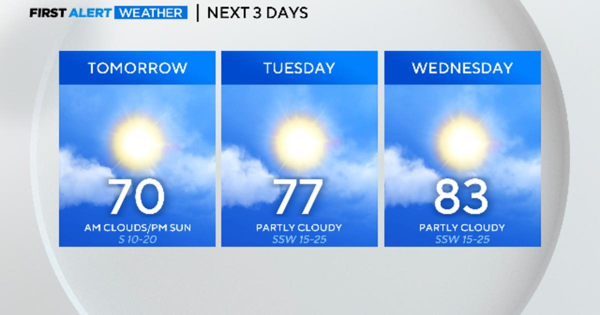

Pleasant start to the week before rain chances returnNORTH TEXAS — We saw a nice but cooler-than-average day across North Texas on Sunday. Our high temperature was slightly below average topping out at 64°. Clouds increase Sunday night as an upper-level disturbance moves close to the Red River and our clouds increase in response. There is a chance of some sprinkles in the forecast overnight and through mid-morning but with drier air in the lower levels, we may not see any precip reach the surface. Our spring pattern continues this week with a mid-week warmup ahead of the next strong cold front later this week. Wednesday's high temps will warm to the mid to low 80s which is the warmest we will see this week. We could see winds gusting to near 30 mph Wednesday. Thursday has the potential for strong to severe storms. Rain and storms remain in the forecast through the end of the week. Dryline storms are possible on Thursday and the Storm Prediction Center has a 15% chance of those storms reaching severe limits on Thursday afternoon to evening. This will be a forecast to watch this week but I wanted to alert you to stay weather-aware Thursday. Friday we have cooler temps on the way and the weekend will see temps near mid-March averages. |
 |